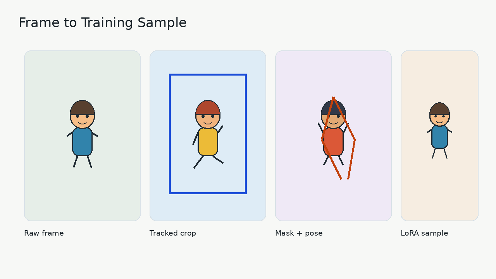

Pipeline Core
Python modules and CLI wrappers coordinate stage execution, metadata, and artifacts.
CPU-safe demo for a production-style ML pipeline
This project demonstrates a file-driven computer vision pipeline for preparing animated character LoRA datasets: extraction, tracking, segmentation, pose, embeddings, dataset assembly, inference samples, and animation export.
Product results
The generated assets are safe to publish and designed for screenshots, walkthroughs, and portfolio review.

End-to-end flow
The public demo uses synthetic/stub outputs so reviewers can inspect the system without private media, GPU weights, or API keys.
Demo scenarios
These scenarios map the engineering work to what an interviewer can understand in a few minutes.
Deliverables
Architecture
Python modules and CLI wrappers coordinate stage execution, metadata, and artifacts.
YOLO, ToonOut/SAM-style segmentation, DWPose, CLIP embeddings, LoRA training, and evaluation adapters.
YAML/TOML configs and parquet metadata keep stage inputs and outputs reproducible.
Static JSON powers this public-facing walkthrough, while the real pipeline remains file-based.
Runbook
pip install -r requirements/core.txt -r requirements/dev.txtbash bash/run_full_pipeline_stub.shpython scripts/demo/run_demo_pipeline.py --skip-pipelinepython -m http.server 8080 -d portfolio-web